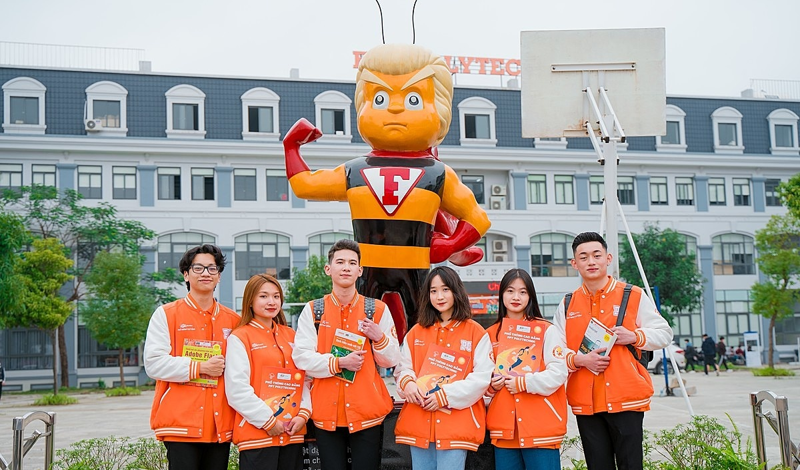

Giới thiệu về FPT Polytechnic
 FPT Polytechnic là trường đào tạo nghề thuộc tập đoàn FPT, được thành lập vào năm 2006. Trường có trụ sở chính tại Hà Nội và các cơ sở khác tại TP.HCM, Đà Nẵng, Cần Thơ, Tây Nguyên và các tỉnh thành khác. FPT Polytechnic cung cấp các chương trình đào tạo đa dạng trong các lĩnh vực như Công nghệ thông tin, Kinh doanh, Thiết kế đồ họa, Quản trị khách sạn, Du lịch và nhiều ngành nghề khác.
FPT Polytechnic là trường đào tạo nghề thuộc tập đoàn FPT, được thành lập vào năm 2006. Trường có trụ sở chính tại Hà Nội và các cơ sở khác tại TP.HCM, Đà Nẵng, Cần Thơ, Tây Nguyên và các tỉnh thành khác. FPT Polytechnic cung cấp các chương trình đào tạo đa dạng trong các lĩnh vực như Công nghệ thông tin, Kinh doanh, Thiết kế đồ họa, Quản trị khách sạn, Du lịch và nhiều ngành nghề khác.
Phương pháp đào tạo
FPT Polytechnic nổi bật với phương pháp đào tạo thực hành, giúp sinh viên phát triển kỹ năng nghề nghiệp và sẵn sàng cho thị trường lao động. Trường cũng có mối quan hệ chặt chẽ với các doanh nghiệp, tạo điều kiện cho sinh viên thực tập và tìm kiếm việc làm sau khi tốt nghiệp.
Môi trường học tập
 FPT Polytechnic cam kết mang đến môi trường học tập hiện đại, sáng tạo và hỗ trợ sinh viên phát triển toàn diện. Trường không chỉ tập trung vào kiến thức chuyên môn mà còn chú trọng đến kỹ năng mềm, tư duy phản biện và khả năng làm việc nhóm.
FPT Polytechnic cam kết mang đến môi trường học tập hiện đại, sáng tạo và hỗ trợ sinh viên phát triển toàn diện. Trường không chỉ tập trung vào kiến thức chuyên môn mà còn chú trọng đến kỹ năng mềm, tư duy phản biện và khả năng làm việc nhóm.
Tầm nhìn và sứ mệnh

Với sự phát triển nhanh chóng của công nghệ và thị trường lao động, FPT Polytechnic không ngừng cập nhật chương trình đào tạo để đáp ứng nhu cầu của xã hội. Trường hướng tới mục tiêu trở thành một trong những cơ sở đào tạo nghề hàng đầu tại Việt Nam và khu vực.